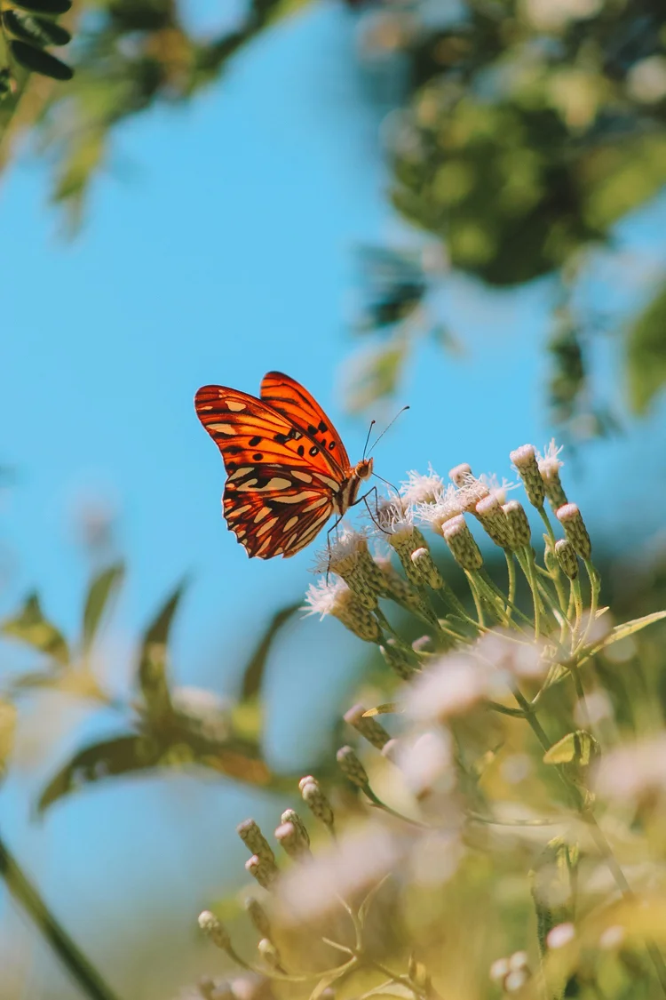
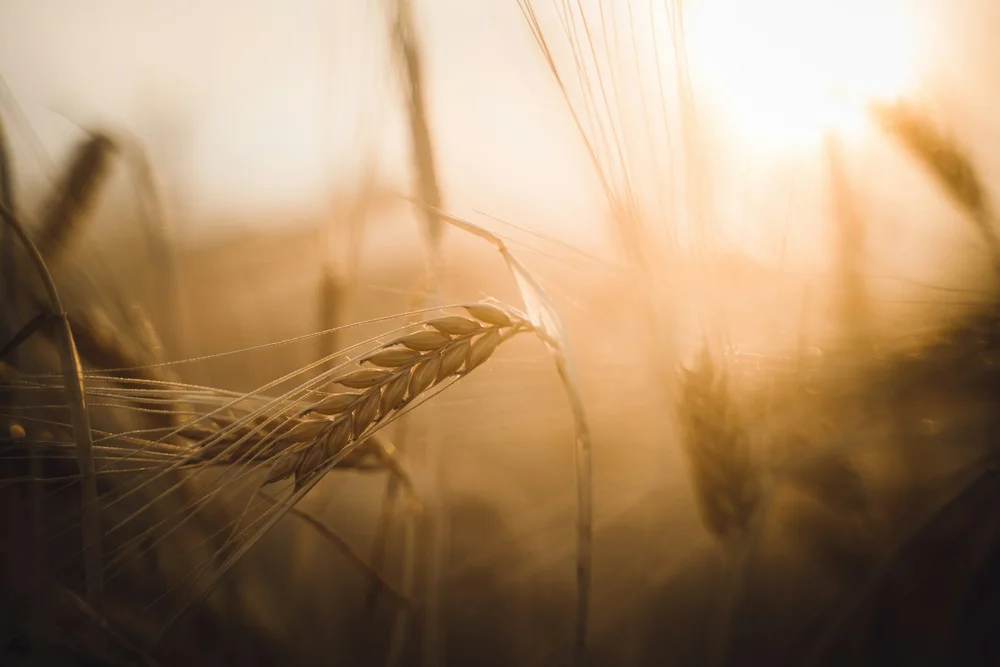
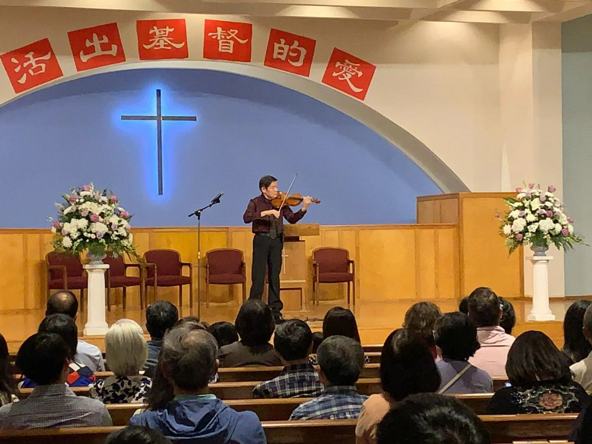
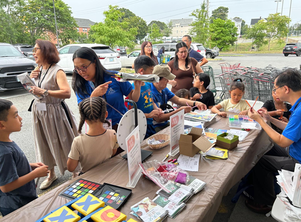
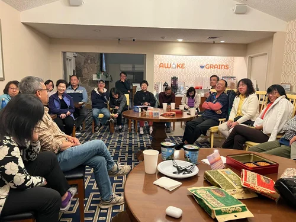
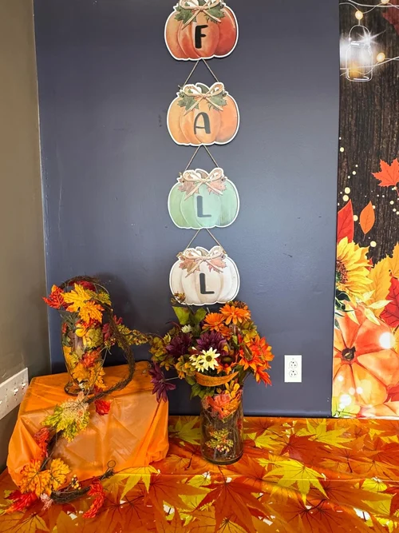
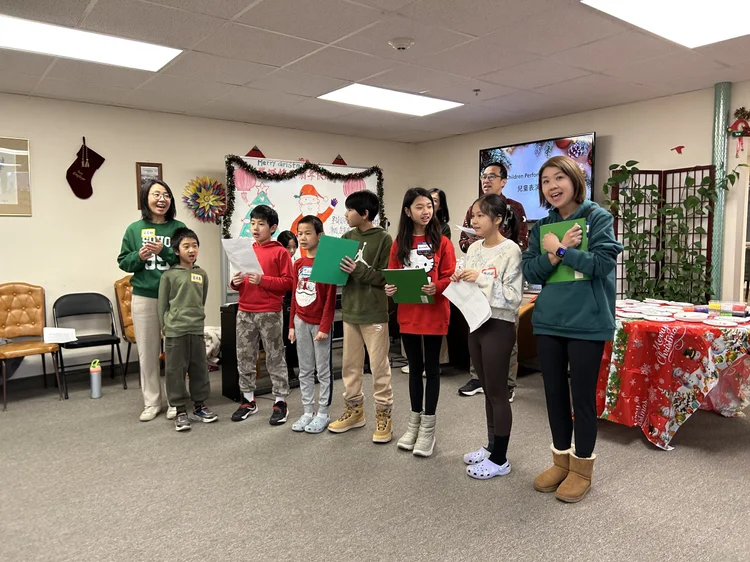
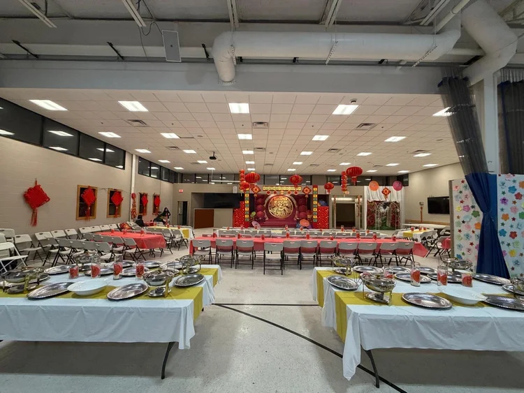
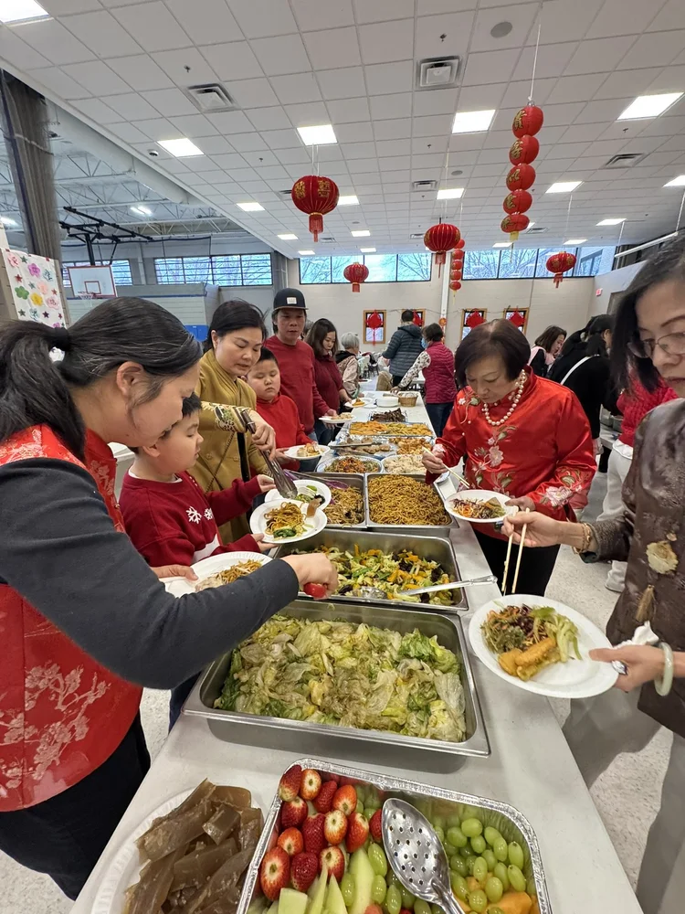

消息與見證
News & Updates
記錄上帝在我們中間的工作
A record of God's work among us
年度消息
Ministry News by Year
點擊月份卡片閱讀完整報告Click any month card to read the full report
Nearly 50 members competed across 28 matches over two weekends in a friendly table tennis tournament. Also, nearly 100 church members attended the biennial joint brothers and sisters' retreat with special lectures on rebuilding love in the family.
A busy month: National Day of Prayer service, the annual church cleaning day with nearly 100 volunteers, handmade Mother's Day corsages, a fellowship staff retreat, a CEF children's Bible seminar, and a multicultural food and hymn festival.
Caleb and Joyful fellowships held a joint gathering. The Evangelism Department hosted a calligraphy and flower arrangement event. The Chinese School held its graduation ceremony, and Father's Day was celebrated alongside a baptism service.
Over 80 people attended the church's first ever hymn sharing and testimony meeting on July 9th. The Worship Department also held a series of training retreats to strengthen Sunday worship across audio-visual, reception, and music ministry teams.
The Care Department held a training retreat. The 2023 Vacation Bible School "Stellar" welcomed nearly 100 children with 70+ volunteers. Jia Mei Fellowship organized a five-day cruise to Saint John, Canada, with nearly 65 members.
The annual Rhode Island Dragon Boat Festival drew nearly thirty teams. The church's team competed while the evangelism booth — featuring balloon animals, Chinese school enrollment, and gospel materials — reached the broader community.
Over 100 members from Caleb and Jia Mei fellowships gathered for games, hymns, and testimony sharing. The 6th Bible Knowledge Competition on 1 & 2 Samuel saw Jia Mei Fellowship claim their second consecutive championship.
About 300 brothers, sisters, and friends gathered for the Thanksgiving service on November 23rd, jointly organized by the Evangelism and Fellowship Departments. Four members shared testimonies followed by a sumptuous turkey feast.
A reflection on the church's 2023 theme "May Your Will Be Done," exploring 74 Bible passages on God's will across five dimensions — understanding, requirements, efficacy, hindrances, and how to discern His will.
Twelve brothers and sisters shared how God's Word has shaped their lives in this three-week winter Sunday school. Over 40 attendees were moved by testimonies of faith, strength, and love drawn from Scripture.
Nearly 60 brothers and sisters prepared 400 Chinese lunchboxes and 350 light meals for over 300 community residents as part of the church's 47th anniversary community outreach — living out the love of Christ.
Irish pastor-musician Ryan Longridge performed "Beyond the Piano" for 200 attendees as part of the 47th anniversary. The Ministry of Evangelism also launched free monthly adult English classes with a welcome dinner.

The 25th Sisters' Retreat welcomed 70 sisters for a spiritual feast on Ruth's story of God's abundant grace. A Zoom reunion with the retreat's founder and a 25th anniversary awards ceremony made it a milestone gathering.
Over 300 brothers, sisters, and friends gathered at Colt State Park for the church's biennial summer outing — filled with outdoor worship, hymns, barbecue, and games under the blazing sun. What goodness and beauty this is!
CCCRI Row Models competed in 24 teams at the RI Dragon Boat Festival, winning 1st in Group D and 10th overall. The church's outreach booth ran alongside the race, reaching families with balloons, Chinese school enrollment, and the gospel.

Nearly 400 gathered for Thanksgiving. Two sisters shared moving testimonies of God's healing from insomnia and despair. Five church elders testified of God's salvation under the evening theme "Lift Up the Cup of Salvation."
A special Lunar New Year gathering was held in the church coffee room for three English classes, attracting over 25 teachers, students, and families. Participants received red envelopes containing five-colored gospel beads.

Former principal violinist of the Railway Art Troupe performed over ten moving Christian hymns, drawing over 120 attendees including many new friends to the church.

The Missionary Department held its first "Rhode Island Evangelism Outreach" event at Good Luck Supermarket. Over 20 brothers and sisters participated, using games and crafts to share the gospel with the community.
The 26th annual Rhode Island Dragon Boat Festival at Festival Pier in Pawtucket. The church's team Row Model competed, while the Chinese and English sections ran an outreach booth reaching hundreds of families.

Two fellowships journeyed to Vermont for autumn foliage trips — Home Fellowship's four-day trip to Lake Champlain and Stowe, and New Song Canaan Fellowship's three-day retreat filled with worship and fellowship.

Nearly 500 gathered for the annual Thanksgiving celebration. The 8th Bible Knowledge Competition focused on Acts. Jia Mei and Caleb fellowships held a moving joint event with testimonies, hymns, and a wonton lunch.

A month full of ministry: senior center visit, English class celebration, charity concert benefiting 400 community members, Brown University student care, 500-family Christmas lunch delivery, and reflections on the gift of Christ.

On February 14th, the Family Fellowship hosted its 14th Annual Spring Festival Gala. Brothers and sisters gathered with songs, dances, testimonies, a love feast, and a dumpling-making session to celebrate the Lunar New Year together in the Lord's house.

A blessing concert drew first-time visitors to the church. Also: the three Cantonese fellowships held their 10th annual joint Chinese New Year gathering — battling a record blizzard, sharing food, games, and the grace of God.